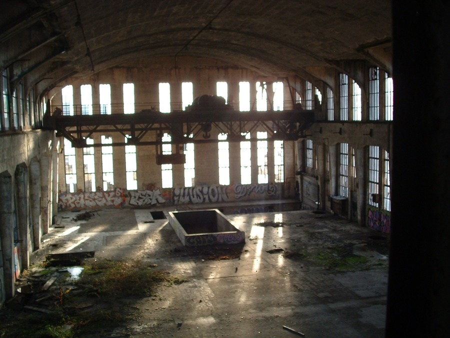

REF: BE_294
KV-70
Industrial power station. Atmospheric ruins with major decay

REF: BE_882
Villa Victoria
An abandoned villa perched on elevated, mountainous terrain in Belgium.

REF: BE_001
Charleroi Power Plant
Charleroi power plant: empty halls and rusting machinery.

REF: BE_009
The Forgotten Tower
Abandoned tower and ruins in the fields near Estinnes, with some buildings still used for hay.

REF: BE_771
Lanaken Manor
Abandoned elderly home in Lanaken, frozen in time with bedsheets still on beds and personal belongings left behind.
[ DATA_ENCRYPTED ]
REF: ERR_404
[ REDACTED ]
Unauthorized access. Signal lost.